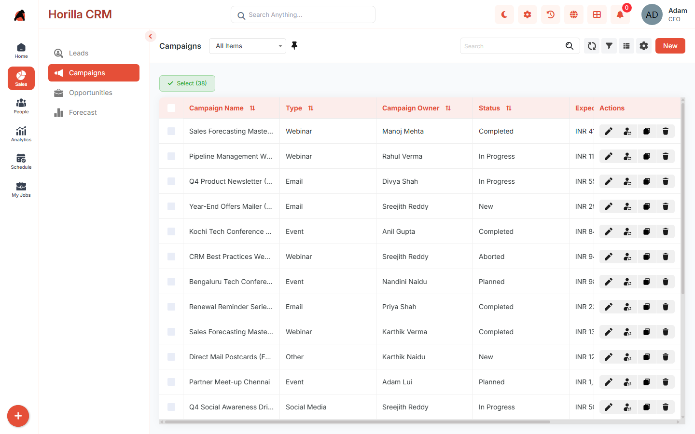
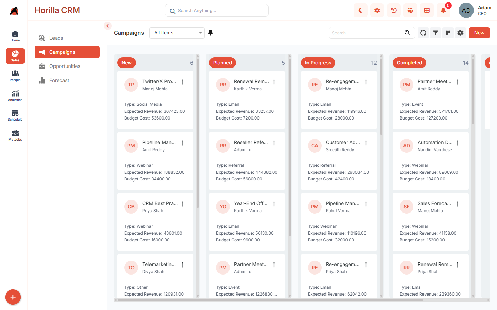
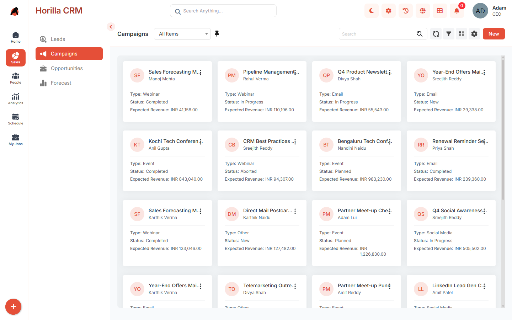
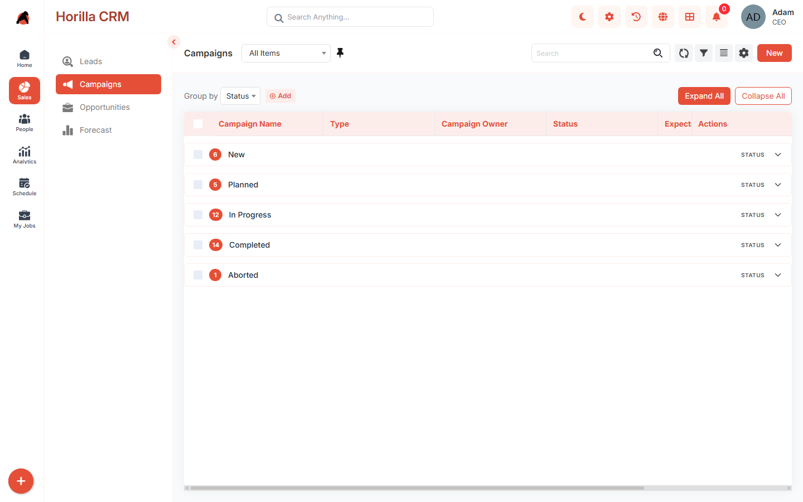
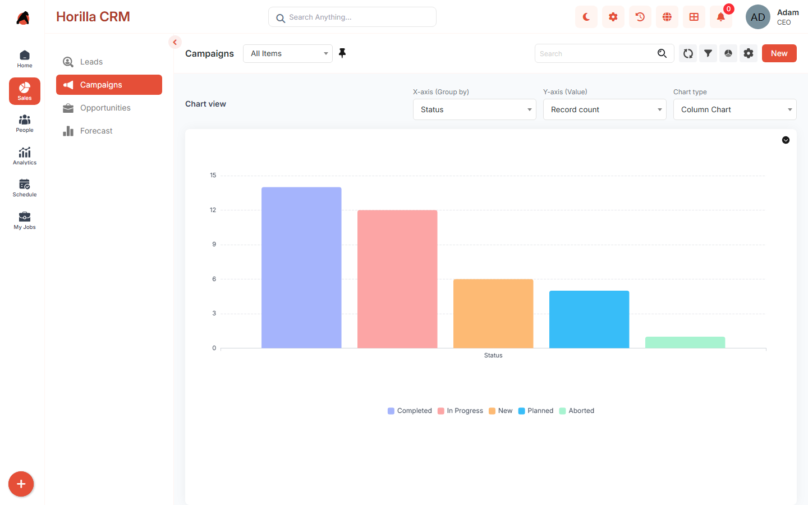
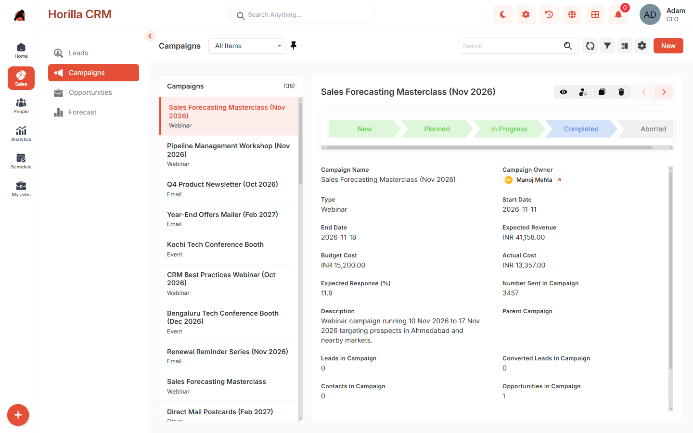
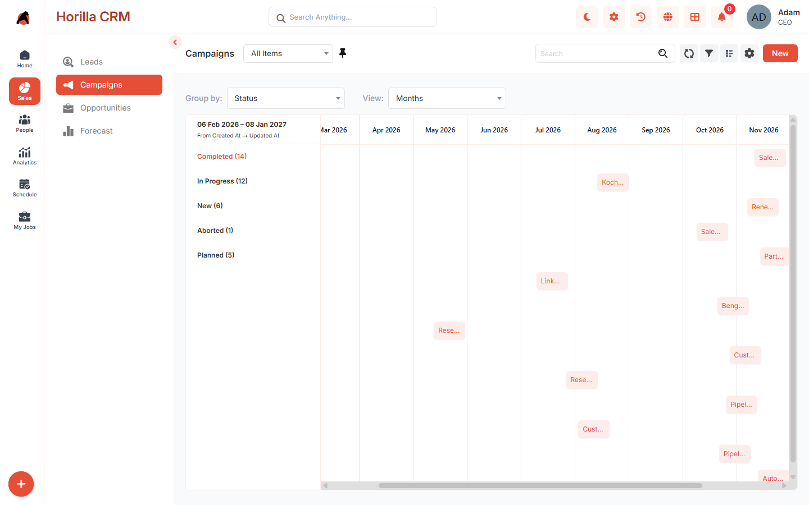
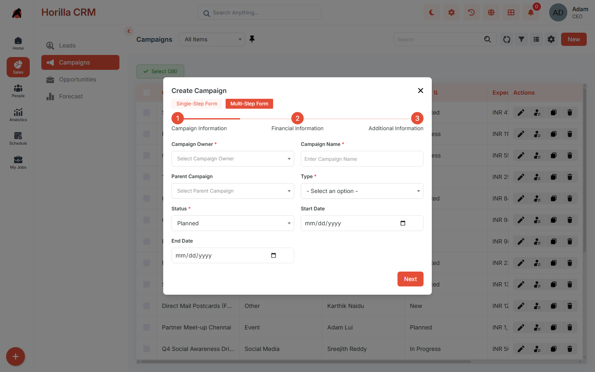
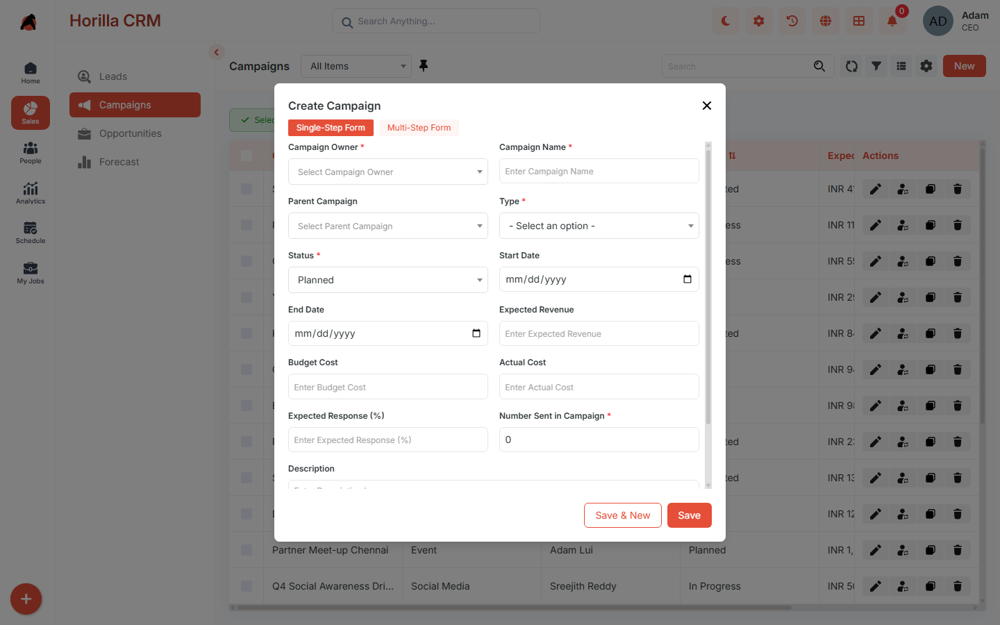
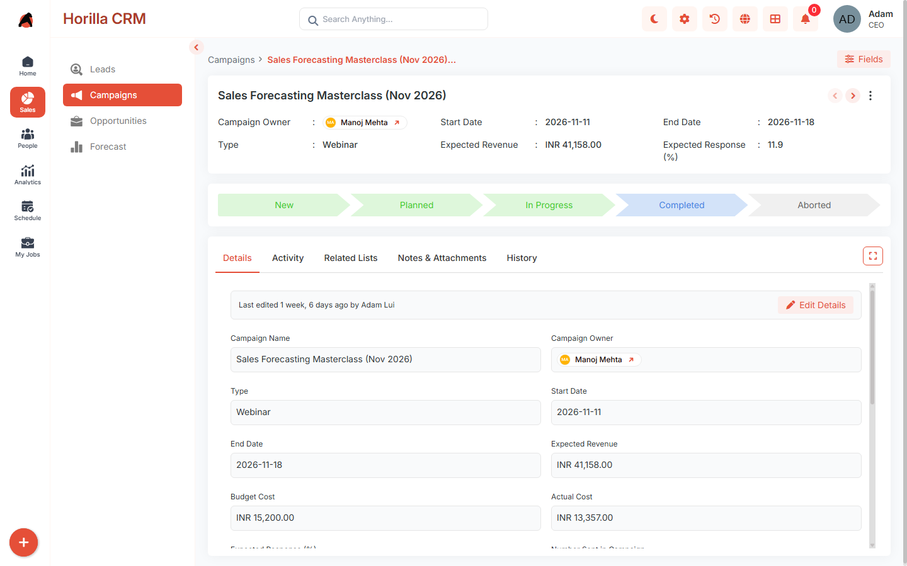

Introduction
The Campaigns module gives marketing and sales teams one place to plan, execute and track marketing initiatives. It records campaign activities, the target audience, the budget and the results achieved. Because campaigns are linked to Leads and Contacts, marketing effort and sales follow-up stay aligned.
Key Features and Functionalities
1. Campaigns Overview
Purpose: see and manage every campaign recorded in the system from a single list.
- Go to Sales → Campaigns. The page opens on the Kanban view. List, the tabular view, is on the view toolbar.
- In List view, use the search box and filters to narrow the campaigns by criteria such as campaign name, campaign type or status.
- Columns can be sorted, and the filters applied to the list can be customised.
- Select campaigns with the row checkboxes to run bulk actions: Update, Export and Delete.

2. Kanban View
Purpose: follow campaign progress visually as a workflow.
- Campaigns are arranged into columns by progress or status.
- How campaigns are categorised into columns is controlled by the Kanban settings.
- Drag and drop a campaign card from one column to another to update its stage.

3. Card View
Purpose: scan campaigns as compact summary cards.
- Switch to Card View from the view toolbar.
- Each card shows the key campaign details: Campaign Name, Campaign Owner, Campaign Type, Status and Expected Revenue.
- The same search and filter options available in List View apply here.

4. Group By View
Purpose: organise campaigns into collapsible groups for comparison.
- Switch to Group By View from the view toolbar.
- Group campaigns by Status, Campaign Type or Campaign Owner.
- Each group appears as a section that can be expanded or collapsed.

5. Chart View
Purpose: analyse campaign data graphically.
- Switch to Chart View from the view toolbar.
- Charts visualise campaign statuses, campaign types, and the distribution of budget and revenue.

6. Split View
Purpose: read campaign details without leaving the list.
- Activate Split View from the view toolbar.
- The left panel holds the campaign list; the right panel shows the details of the selected campaign.

7. Timeline View
Purpose: see campaigns in chronological order.
- Switch to Timeline View from the view toolbar.
- Campaigns are ordered by creation date or last updated date, and can optionally be grouped by status.
- You can switch to a start date / end date view to spot overlapping campaigns and peak periods.

8. Creating a New Campaign
Purpose: capture and store the information of a new campaign.
Click New on the Campaigns page to open the campaign creation form. The form offers two entry modes, and you can switch between them at any time while filling it in.
Multi-Step Form
- Step 1 – Basic Information: Campaign Owner, Campaign Name, Status, Start Date, End Date, Campaign Type.
- Step 2 – Financial Details: Budget Cost, Actual Cost, Expected Revenue, Estimated Response.
- Step 3 – Additional Information: Description, Audience Size.
- Use Next and Previous to move between the steps, then click Save to create the campaign.

Single-Step Form
- All campaign fields are presented on one page for quick data entry.
- Use the toggle in the form header to switch to single-step mode.
- Click Save to create the record.

9. Campaign Detailed Information
Purpose: work with everything recorded against a single campaign.
- Open the detail view by clicking the campaign name in the list view or Kanban view.
- The detail view brings together the campaign's related activities, performance statistics and history.
- The status can be updated directly from this page, and the campaign can be marked as completed by selecting the final stage in the progress bar.
